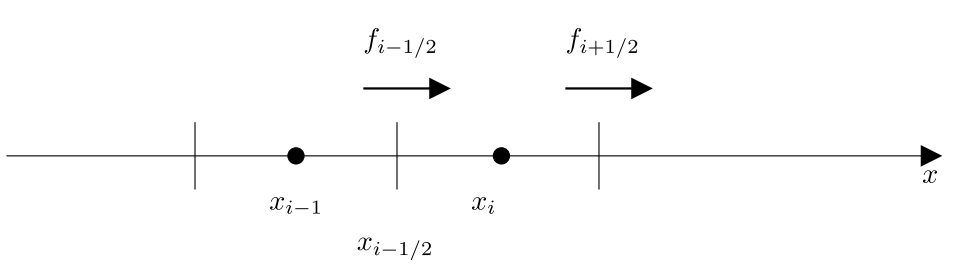

Warning
吾尝终日而思矣，不如须臾之所学也
平流输送（Advection）是指在流体中，物质随着流体的流动而传输的过程。平流输送是空气质量数值模式(CTM)中最基本的过程之一。而平流方程只是连续性方程的特殊情况。
连续性方程（continuity equation）是描述守恒量传输行为的偏微分方程。在流体力学里，连续性方程表明，在任何稳定态过程中，质量进入物理系统的速率等于离开的速率。质量连续性方程的微分形式为
其中 表示污染物的浓度（质量浓度，如）， 为速度向量场， 为通量。
数值模式中的平流过程，就是在已知速度向量场的情况下，求解大气连续性方程。
通常给定的风场是离散的，同时，我们也需要通过数值方式来求解该方程。
我们通过一个简单推导来理解如何对平流过程进行数值求解。
首先把散度符号展开
我们考虑一维的平流输送方程
一维的平流输送方程有两个需要离散化处理的变量，分别为 和 。
我们首先对公式\ref{1.3} 进行空间上的离散处理。在离散化过程中，我们假定空间离散式均匀的（既等网格）。

那么公式可以改写为
其中 为格子 和格子 之间的边界() 处的通量（单位时间，单位面积通过的物质量的：），其物理含义为该格子浓度的变化等于流入流出的量。其中通量的公式为
将公式\ref{1.5}带入到公式\ref{1.4}中
Note
WRF等数值模式采用Arakawa Staggered C-Grid计算风场，因此和为已知量（注意此时是指网格边界处的风矢量，如果是插值得到，那么可能会存在误差）。
再对公式\ref{1.6} 时间进行离散化，如果采用简单的显示欧拉方法，即可得到
其中 为时间索引，整理一下（Godunov's scheme）：
由以上公式可知，计算平流过程最关键的步骤就是如何获得边界处的通量（边界处的浓度是关键）。
似乎根据公式\ref{1.8} 就能较好的求解出平流对浓度的影响。 如果仔细想想，我们会面对四个额外的问题。
首先，我们观察等号右边的中间项（把括号展开, 并稍加整理）
我们需要意识到，公式\ref{1.9} 中存在一个假设，该公式计算的浓度增量是从格子 输送到格子 ，注意这个增量会最终叠加在格子 中，公式\ref{1.8} 中只涉及对 的更新，那么有没有一种可能。风速太大了，吹出了格子 呢！
当然有可能，所以我们要对数值求解方案施加限制
这就是 Courant-Friedrichs-Lewy（CFL） 条件。
我们在设置 和 的时候，应该尽量保证这个条件，这样积分才具有稳定性。
另外一个我们需要关注的问题是数值扩散，由于充分混合的假设，很容易使得平流方案计算的扩散速度大于物理上的实际扩散速度。
想像一下，如果一个格子很大，比如 ，从西边界吹入一个高浓度的值，这个高浓度值会瞬间在整个格子里面混合，也就是说这个增量一下就会吹到东边界，肯定比实际扩散的要快一些（因此如何获得边界上的值，是一个比较有挑战的事情，好的方案可以减缓数值扩散）。
然后我们需要关注的事情是质量的一致性（污染物浓度的行为和空气密度的行为不一致，模拟空气通量的风场和模拟污染物通量的风场不一致），空气质量模式往往采用离线模拟的方式（气象场先模拟，再模拟CTM），并且CTM的网格和原始的气象网格存在差异，不同的离散方案(时间和空间)和插值都会导致质量一致性的出现问题。
如果用质量混合比来表示平流方程，设。
那么（链式法则 => 带入公式\ref{1.1} => 带入C的定义 => 链式法则）
注意，最终的结论是
要满足质量守恒，公式\ref{1.12}只有唯一的一个解，就是，其中 为常数，也就是说，污染物浓度的变化要和密度变化协调一致（其实很好理解，浓度和空气密度都是同样的方程支配平流输送，变化的步调应该是协调一致的）。
最后我们需要关注的事情是质量守恒性，不能因为平流过程的计算，增加或者减少了物质，平流只是把物质从一个地方输送到另一个地方。质量不守恒一般是怎么引发的呢？
其中一个非常重要的因数就是网格的size不一样大（体积、面积、长度）。在实际的数值模式中，网格不一致的原因有很多种，包括 1）非均一网格；2）气压垂直层；3）地图投影的形变。
那么为什么网格不一致，会导致质量不守恒呢，仔细观察公式\ref{1.8} 就可以方向，物质从左边的格子输送到右边，是以浓度增量的方式更新网格浓度，浓度是强度量，如果左边的格子远小于右边，比如左边为，右边为，如果左边网格损失，物质的量损失了。按照公式，右边的网格增加，但是物种的量却增加了。
Todo
还有其他情况会导致质量不守恒吗？
分段多项式平流方案（Piecewise Parabolic Method，PPM）是一种用于求解流体动力学方程的数值方法，特别是在处理高分辨率、具有激波等间断的流体问题时表现出色。
PPM具有三阶精度，广泛用于主流的空气质量模式中（CMAQ、CAMx 等）。该方案适用于非结构化网格（结构化网格只是非结构化网格的特例），为了思路更加、简单清楚，在本文档的推导过程中，只采用等网格间距的设定，且只考虑一维的情况。
在浓度的离散表示中，网格浓度为该网格的平均浓度。根据定义，我们得到以下公式
其中，表示第个格子在时刻的浓度。为时刻浓度在空间的分布函数，当然 函数是未知的，也是无法精确给出的。
可以针对某个时刻
Note
注意变为暗含了一层意思，不同时间的浓度的空间分布可以用不同的函数表示()，相当于把离散了。
公式\ref{2.2} 暗含了一种检查方案，我们假定已知 (函数形式可以随意给定，比如)，且速度确定并已知，那么可以算出每个网格在任意时间的精确值(函数的形态不变，只是沿着x轴随时间平移)
要进行通量计算，需要知道每个时刻的，不同方案对 的函数形式给出了不同的假设。
比如零阶精度假定格子内的浓度均匀分布（分布函数为常数，格子边界处浓度等于平均浓度），一阶精度假定函数形式为线性的（两个格子的线性插值），而PPM假定该函数为多项式。
PPM方案采用分段连续的二次多项式方案来表示每个格子在不同时间的。为了方便，在后续过程中，省略时间的角标，也就是只考虑某个时次的情况，在每个网格中的二次多项式为（假定左右边界的浓度值已知，该值在后续的推导过程中确认）
其中
Note
作业：已知左右边界的浓度值，已知函数形式为二次多项式，如何推导出该函数形式。
从公式\ref{2.4} 中很容易看出，构造的多项式在左右边界是连续（带入，或者带入），公式\ref{2.4}中只有一个未知参数。
如何计算，我们需要考虑其他已知条件，我们知道该网格的平均浓度。
对公式\ref{2.4} 两边进行积分求，并带入公式\ref{2.2} ，可到的表达式
可以采用sympy 进行公式推导，并且进行验证。
from sympy import *
init_printing()
ci = symbols('c_i', real=true, constant=true) # 网格平均浓度
cL = symbols('cL_i', real=true, constant=true) # 左边界浓度
cR = symbols('cR_i', real=true, constant=true) # 右边界浓度
x = symbols('x')
xL = symbols('xL_i', real=true, constant=true) # 左边界位置
xR = symbols('xR_i', real=true, constant=true) # 右边界位置
c6 = symbols('c6_i', real=true, constant=true) # 参数c6
f = cL + (x-xL)/(xR-xL) * (cR-cL + c6*((xR-x)/(xR-xL))) # 公式2.4
fR = integrate(f, (x, xL, xR))/(xR-xL) # 公式2.2的左边, factor(fR)
solveset(Eq(fR, ci), c6) # 公式2.2
我们在推导公式\ref{2.4}，假定了网格之间边界处的浓度已知，但目前并不知道该值。那么，该如何获得 呢？
在PPM中，通过四次多项式（quartic polynomial）描述浓度在空间的积分函数，从而来求解 的分布。
Note
为什么是四次多项式，而不是三次多项式呢？
因为 在 上的分布是分段抛物线，抛物线的积分是三次，而分段抛物线的积分是四次（边界处的浓度，相当于是三次多项式）！
我们首先定义浓度在空间的积分函数：
而网格边界处的浓度
从公式\ref{2.6} 可知 在边界处的值是已知，现在要求边界处的浓度值，我们需要知道C(x)的函数形式，在PPM中，用5个点（）来构建一个四次多项式（获得参数，5个未知数，5个方程）。
from sympy import *
init_printing() # 更好的打印
# 四次多项式
x, y = symbols('x y', real=true)
a1, a2, a3, a4, a5 = symbols('a1:6') # 参数
f = a1*x**4 + a2*x**3 + a3*x**2 + a4*x + a5 - y
# 线性方程: 已知5个点，确定多项式的参数
dx = symbols('dx') #
x3 = symbols('x_3') # 中心边界点的位置
y3 = symbols('y_3') # 中心边界点处C的值
c1, c2, c3, c4 = symbols('c1:5') # 网格平均浓度
# 方程组
f1 = f.subs([(x, x3 - 2*dx), (y, y3 - c1*dx - c2*dx)])
f2 = f.subs([(x, x3 - dx), (y, y3 - c2*dx)])
f3 = f.subs([(x, x3 ), (y, y3 )])
f4 = f.subs([(x, x3 + dx), (y, y3 + c3*dx)])
f5 = f.subs([(x, x3 + 2*dx), (y, y3 - c4*dx + c3*dx)])
# 解线性方程组
args = linsolve([f1, f2, f3, f4, f5], [a1, a2, a3, a4, a5])
# 带入多项式
a1, a2, a3, a4, a5 = tuple(*args)
f = a1*x**4 + a2*x**3 + a3*x**2 + a4*x + a5 - y
df = Derivative(f, x).doit()
simplify(df.subs(x, x3))
通过代数求解，可以获得
通过该公式，基于网格平均浓度即可计算边界处浓度的值。理论上基于以上公式，就可以进行通量计算了。
对于公式\ref{2.7} ，需要稍加整理。
其中 为第 个格子的平均斜率（三个网格连续变化的斜率？）。
为了让浓度不连续的地方模拟得更好（steeper representation），同时保证了边界浓度在两个格子平均浓度之间（条件1，不人为创造极值，比如可能出现负数），用 来替换 。
该替换标准是如何获得的呢？
我们把 的约束条件（浓度值在左右两个格子的平均值之间）带入公式\ref{2.8}，可以得到一个约束。
更强的一个约束是 ，那么如果，且，约束条件一定会被满足（为什么PPM的条件会更强一些？）。
注意，替换之后，网格按照 积分计算的平均值就与给定的平均值不相等了（不需要一定相等，而且也破坏了边界处的连续性）。
为了避免在间断处出现非物理的振荡（过冲和欠冲，出现这种情况，通量的计算就会变得比较极端，不知道是对是错），在PPM方案中，还有一个约束条件，在一个网格内，浓度的分布是单调的，避免人造极值，破坏物理的合理性，比如负数（网格平均浓度很低，边界浓度差异很大，为了保持抛物线的形态，并且平均值固定，那么就可能出现负值）。
按照之前的公式，得到的 不一定在 和 之间。
情况1: 关注格子的浓度 本身就是局地极值。插值函数设置为常数（就是在格子 中浓度均为）。
情况2: 格子 位于浓度梯度很大的地方，比如左边界比右边界浓度大很多，但是该格子的平均浓度与左边界接近，那么二次多项式的曲线会形成比边界浓度更大的值（为了抵消右边比平均值低很多的情况），破坏了在一个格子里面的单调性。这种现象被称为overshoot（过充，或者超调，是指信号或者函数超过了预期值），发生overshoot时，网格左边界和右边界的值就会被重新设定，其判定条件为，该条件通过对公式\ref{2.4} 求导，判定恒大于0 或者恒小于0 得到。
其中， 时， 为凸函数， 时， 为凹函数函数， 时， 为线性函数，
与 同符号时，且判定条件满足， 更靠近右边界浓度值。按照，带入公式定义公式，求得左边界值，这时在 处(右边界)， 的导数为0。
与 符号相反时，且判定条件满足， 更靠近左边界浓度值。按照，带入公式定义公式，求得右边界值，这是在 处(左边界)， 的导数为0
想象一下，如此处理之后， 在该网格中表现为抛物线的极值 连接边界处。
注意通过该步骤进行替换之后，会破坏边界处的连续性，也就是左右极值不相等（似乎边界处的连续性不是很重要？）!
得到每个网格边界处的浓度值，就能较为容易地计算网格边界处的通量。在边界处传输的平均浓度为
其中 假设为正数，表示 在一次积分时间中，在空间上移动的距离（）。
将公式\ref{2.4} 带入，可以得到
对于第 个格子，公式中的浓度变化代表了从右边传出（ 损失浓度），或者从右边传入的量（ 损失浓度），二者只有一种可能，这取决于风的方向。
from sympy import *
init_printing()
ci = symbols("c_i")
cLi = symbols("cL_i")
cRi = symbols("cR_i")
x = symbols("x")
xLi = symbols("xL_i")
xRi = symbols("xR_i")
dx = symbols("dx")
c6i = symbols("c6_i")
y = symbols("y")
f = cLi + (x-xLi)/dx*(cRi-cLi+(xRi-x)/dx*c6i ) # 公式2.4
fR = integrate(f, (x, xRi-y, xRi))/y # 在边界处进行积分
# 对积分后和方程进行整理
ff = simplify(factor(simplify(fR)).subs(xRi, xLi+dx))
ff.subs(y, dx*x)
在每个网格边界处的单位时间的平均浓度之后，针对某个网格，考虑左右边界的通量，并对时间进行积分，最终就可以获得平流的影响。
其中 为边界处的通量。
PPM的程序实现用到的公式包括:
Note
Sportisse B. Fundamentals in air pollution: from processes to modelling[M]. Springer Science & Business Media, 2009.
Colella P, Woodward P R. The piecewise parabolic method (PPM) for gas-dynamical simulations[J]. Journal of computational physics, 1984, 54(1): 174-201.
Todo